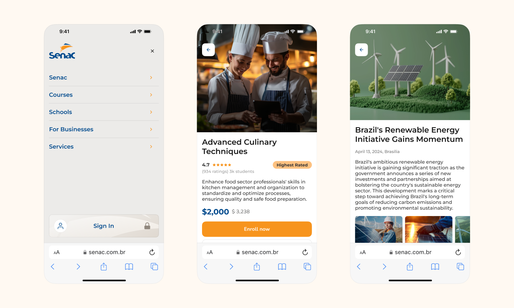
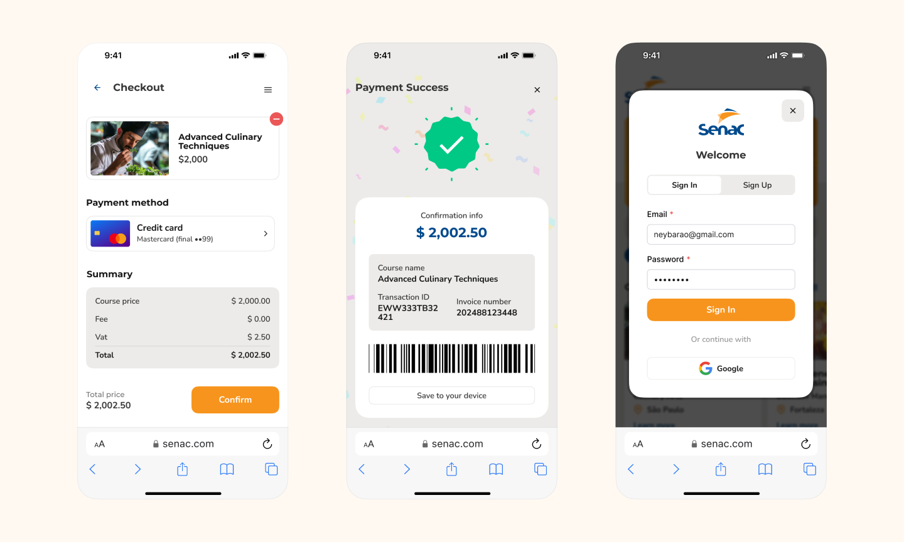

Digital Transformation: Streamlining SENAC’s Enrollment Process
SENAC, a leading educational institution in Brazil, faced significant challenges with its enrollment process, characterized by overcrowded offices and a lack of a unified procedure across the country's 28 states. Tasked with addressing these issues, my role as a Product Designer was pivotal in developing an innovative online platform to standardize and simplify the enrollment process, making education more accessible to a broader audience.
The project began with comprehensive interviews with SENAC staff and potential students to pinpoint the inefficiencies in the existing system. Insights from these interviews informed the development of an online solution focused on enhancing the user experience for course search and registration. This initiative was crucial for making the registration process more efficient and accessible, particularly in states where digital infrastructure was limited.

A significant outcome of this project was the implementation of a unified, digital platform in nearly 20 Brazilian states, dramatically transforming SENAC's approach to enrollment. The introduction of online payments also enhanced security and convenience, marking a departure from the previous, less secure methods.

Given the unexpected discovery that the majority of users primarily accessed the internet via smartphones, the project took a mobile-first approach. This strategy entailed prioritizing the development of a mobile interface that was resource-efficient and accessible, even on less advanced devices.
The project adhered to SENAC’s brand guidelines, ensuring a consistent and recognizable visual identity across all digital touchpoints. This approach not only streamlined the enrollment process but also reinforced SENAC's brand presence nationwide.
Reflecting on this project, a key learning was the critical importance of understanding the user's environment and capabilities, which, in this case, led to a mobile-first development strategy. This insight was invaluable for designing a platform that truly met the needs of SENAC’s diverse student body.
Working on this project was a profound learning experience, broadening my expertise across multiple design disciplines. It underscored the importance of user research in informing design decisions and highlighted the impact of digital solutions on making education more accessible. This project was a significant milestone in my career, showcasing the potential of design to solve complex challenges and improve people’s lives.